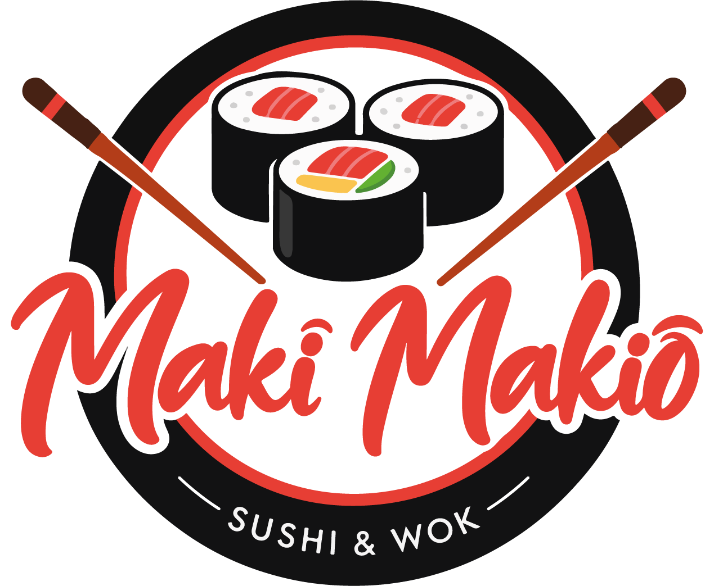
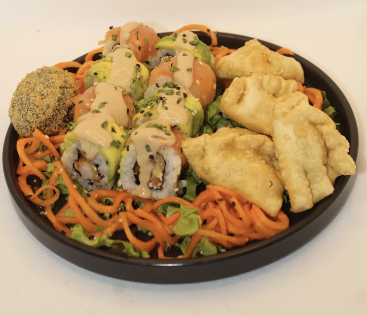
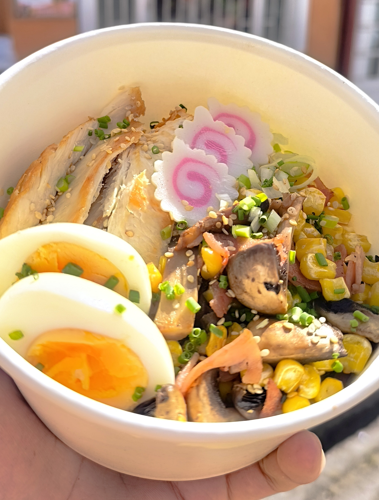
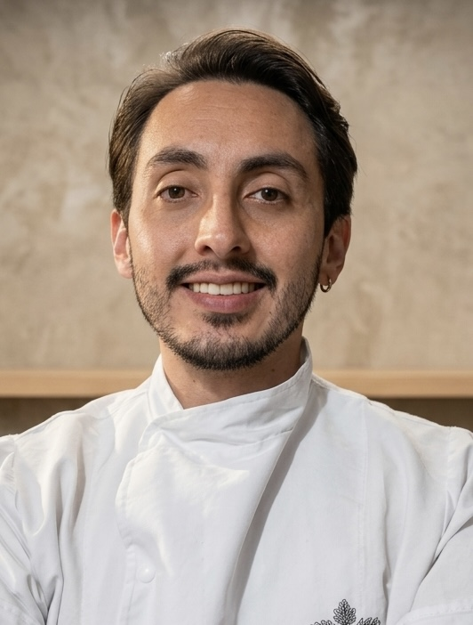

Frescura
Ingredientes seleccionados y preparaciones cuidadas.

Maki MakioSUSHI · WOK · FUSIÓN
Técnicas japonesas, sabor colombiano y el toque local que hace cada bocado especial.
Facatativá, Colombia

NUESTRA ESENCIA
Creamos experiencias de cocina fusión colombo-japonesa con ingredientes frescos y locales, combinando técnicas japonesas con sabores colombianos para ofrecer platos innovadores, calidad y una atención cercana.
Descubre nuestro menúIngredientes seleccionados y preparaciones cuidadas.
Sabores que conectan la cocina japonesa con la colombiana.
Una propuesta que valora los ingredientes de nuestra región.
ALGO DELICIOSO TE ESPERA
Explora nuestras opciones y encuentra tu próximo favorito.
Bocados llenos de sabor y creatividad.

Una combinación para descubrir y disfrutar.

Opciones para diferentes antojos y momentos.

QUIÉNES SOMOS
Maki Makio nació del deseo de ofrecer en Facatativá una experiencia gastronómica diferente. Desde nuestros primeros pasos, hemos combinado técnicas japonesas con ingredientes y sabores cercanos a nuestra cultura, creciendo con cada pedido y con el apoyo de nuestra comunidad.
Seguimos trabajando para ofrecer productos frescos, propuestas innovadoras y una atención cercana en cada experiencia.
Conoce nuestro menú ↗HABLEMOS
¿Tienes antojo o alguna pregunta? Escríbenos y conoce más de Maki Makio.
Cra. 13 # 12B–03
Facatativá, Cundinamarca